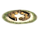
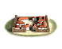
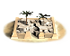

RTR: Imperium Surrectum
RTR: Imperium SurrectumLarge town
← settlement sizes · all settlements · wiki index
Village < Town < Large town < City < Large city < Huge city
A settlement reaches this size at a population of 4,000, and all 22 cultures that declare the figure declare the same one. It is rung 3 of 6, above Town and below City.
Where these answers come from
The ladder is read from descr_sm_settlements.txt and checked against descr_cultures.txt; both files declare it, per culture, and they agree. The population figures come from each culture's settlement upgrade levels block in descr_cultures.txt, which is the only place in the mod that puts a number on a settlement size — there is no descr_settlement_mechanics.txt in RIS. What a size unlocks is read off the settlement_min field every building level carries in export_descr_buildings.txt, and units are reached through the levels that can raise them. Where the files establish nothing, the section says so with the number of things that were examined, rather than being left silently empty.
What it takes to reach it, and what holds it there
| Population | What the mod file calls it | Population | What the mod file calls it | Population | What the mod file calls it | |||
|---|---|---|---|---|---|---|---|---|
| Population needed to reach it | 4,000 | population needed to upgrade to this level | Floor | 400 | minimum population possible in this settlement | Overcrowding starts | 16,000 | maximum population before overcrowding |
| Squalour doubles | 9,000 | above this population, each extra pop counts double for squalour | Base population | 4,000 | the base population of this settlement before squalor kicks in |
Every one of the 22 cultures in descr_cultures.txt gives the same five numbers for every size, so these are the numbers for all of them.
What makes a settlement fall out of this size is not determined. descr_cultures.txt states the population needed to reach a size and the floor below which a settlement's population cannot go, and nothing in the mod files states a demotion rule. The upgrade threshold of the rung below is the obvious candidate and it is not what the file says, so it is not published here.
Which cultures can reach it
All 22 of the 22 cultures in descr_cultures.txt declare a max settlement level that reaches this size.
All 8 of the ladders in descr_sm_settlements.txt include it.
What it unlocks
Building levels first buildable here — 80
80 levels declare settlement_min large_town, so they are the buildings a settlement can first put up on reaching this size. Counting everything from the bottom of the ladder up to here, 128 of the 272 building levels in the mod are available at this size.
The 80 levels
Units first raisable here — 0
No unit first becomes raisable at this size. All 29,752 recruit lines in the mod were resolved to the 744 distinct units they name, and each unit's minimum size taken from the smallest level that can raise it. 740 of them are raisable at this size, every one of them from lower down the ladder.
What it blocks — none
Nothing in the mod is withheld for a settlement being this large or larger. The size clause in exportdescr_buildings.txt is settlement_min, a field on a building level rather than a condition, and it appears 272 times with 0 of them negated — a field cannot be. There is no settlement_max_level in the file (0 occurrences) and no settlement_min_level either (0), and 0 requires expressions in the whole file mention a settlement size at all._
At the campaign start
481 of the 1,306 settlements the campaign file places begin at this size — 36.8% of them. 177 of those are a faction's capital.
Who holds them (195 factions)
| Faction | Culture | Settlements | Faction | Culture | Settlements | Faction | Culture | Settlements | Faction | Culture | Settlements |
|---|---|---|---|---|---|---|---|---|---|---|---|
| Free Peoples | libyan | 93 | Seleucid Empire | e_hellenistic | 49 | Ptolemaic Empire | e_hellenistic | 41 | Antigonid Kingdom | w_hellenistic | 16 |
| Rome | roman | 16 | Carthage | carthaginian | 14 | Bactria | e_hellenistic | 6 | Syracuse | greek | 5 |
| Characene | iranian | 4 | Epirus | w_hellenistic | 4 | Kush | ethiopian | 4 | Acarnanian League | greek | 3 |
| Aetolian League | greek | 3 | Boii | barbarian | 3 | Bosporans | w_hellenistic | 3 | Byzantium | greek | 3 |
| Illyrian Kingdom | illyrian | 3 | Indians | indian | 3 | Minaeans | arab | 3 | Pontic Pentapolis | greek | 3 |
| Seleucid Rebels | e_hellenistic | 3 | Vindelici | barbarian | 3 | Anartes | barbarian | 2 | Aorsi | scythian | 2 |
| Armenia | eastern | 2 | Belli | celtiberian | 2 | Boeotians | greek | 2 | Bruttians | roman | 2 |
| Cappadocia | iranian | 2 | Cenomani | barbarian | 2 | Chorasmia | scythian | 2 | Dumnonii | brittonic | 2 |
| Galatians | barbarian | 2 | Getae | dacian | 2 | Knossos | greek | 2 | Kydonia | greek | 2 |
| Liburni | illyrian | 2 | Norici | barbarian | 2 | Pontus | iranian | 2 | Royal Sarmatians | scythian | 2 |
| Sequani | barbarian | 2 | Treveri | barbarian | 2 | Tylis | barbarian | 2 | Vaccaei | celtiberian | 2 |
| Volcae | barbarian | 2 | Achaean League | greek | 1 | Aedui | barbarian | 1 | Albanians | eastern | 1 |
| Allobroges | barbarian | 1 | Ambrones | barbarian | 1 | Apuani | barbarian | 1 | Ardiaei | illyrian | 1 |
| Arevaci | celtiberian | 1 | Armenia Minor | eastern | 1 | Arse | iberian | 1 | Arshi | scythian | 1 |
| Asti | thracian | 1 | Astures | celtiberian | 1 | Athens | greek | 1 | Atropatene | iranian | 1 |
| Aulerci | barbarian | 1 | Axum | ethiopian | 1 | Bastarnae | germanic | 1 | Basti | iberian | 1 |
| Belgae | barbarian | 1 | Bessi | thracian | 1 | Bithynia | thracian | 1 | Bituriges | barbarian | 1 |
| Breuni | barbarian | 1 | Brigantes | brittonic | 1 | Cabyle | thracian | 1 | Cadurci | barbarian | 1 |
| Caledonii | brittonic | 1 | Cantabri | celtiberian | 1 | Cantiaci | brittonic | 1 | Carpetani | celtiberian | 1 |
| Catuvellauni | brittonic | 1 | Celtici | celtiberian | 1 | Chatti | germanic | 1 | Chauci | germanic | 1 |
| Chersonesus | greek | 1 | Cherusci | germanic | 1 | Chios | greek | 1 | Cimbri | germanic | 1 |
| Cisalpine Boii | barbarian | 1 | Cius | greek | 1 | Colchians | eastern | 1 | Corsi | barbarian | 1 |
| Costoboci | dacian | 1 | Crobyzi | dacian | 1 | Cyrene | e_hellenistic | 1 | Daesitiates | illyrian | 1 |
| Dardania | illyrian | 1 | Delmatae | illyrian | 1 | Dentheletae | thracian | 1 | Durotriges | brittonic | 1 |
| Eburones | barbarian | 1 | Edeta | iberian | 1 | Elis | greek | 1 | Emporion | greek | 1 |
| Eravisci | barbarian | 1 | Frisii | germanic | 1 | Gallaeci | celtiberian | 1 | Garamantes | libyan | 1 |
| Gauts | germanic | 1 | Gerrha | arab | 1 | Gortyn | greek | 1 | Hadhramaut | arab | 1 |
| Helvetii | barbarian | 1 | Heniochi | eastern | 1 | Heraclea Pontica | greek | 1 | Hermunduri | germanic | 1 |
| Himyar | arab | 1 | Histri | illyrian | 1 | Histria | greek | 1 | Iapodes | illyrian | 1 |
| Iazyges | scythian | 1 | Iberians | eastern | 1 | Ilergetes | iberian | 1 | Ilici | iberian | 1 |
| Ingauni | barbarian | 1 | Insubres | barbarian | 1 | Issa | greek | 1 | Iverni | brittonic | 1 |
| Kucha | scythian | 1 | Labeatae | illyrian | 1 | Lacetani | iberian | 1 | Langobardi | germanic | 1 |
| Lihyan | arab | 1 | Lucanians | roman | 1 | Lugii | germanic | 1 | Lusitanians | celtiberian | 1 |
| Lysiad Kingdom | greek | 1 | Lyttos | greek | 1 | Maedi | thracian | 1 | Mamertines | roman | 1 |
| Marcomanni | germanic | 1 | Masaesyli | libyan | 1 | Massylii | libyan | 1 | Mauri | libyan | 1 |
| Messapians | roman | 1 | Messene | greek | 1 | Mossynoeci | eastern | 1 | Musulamii | libyan | 1 |
| Nabataea | arab | 1 | Nasamones | libyan | 1 | Nervii | barbarian | 1 | Odrysian Kingdom | thracian | 1 |
| Olbia | greek | 1 | Ordovices | brittonic | 1 | Paeonia | thracian | 1 | Palmyra | arab | 1 |
| Paphlagonia | anatolian | 1 | Parni | iranian | 1 | Pergamon | w_hellenistic | 1 | Persis | iranian | 1 |
| Picentes | roman | 1 | Priene | greek | 1 | Qataban | arab | 1 | Quadi | germanic | 1 |
| Rhoxolani | scythian | 1 | Royal Scythians | scythian | 1 | Saka | scythian | 1 | Salassi | barbarian | 1 |
| Salluvii | barbarian | 1 | Samnites | roman | 1 | Sardinians | iberian | 1 | Sarsinates | roman | 1 |
| Scordisci | barbarian | 1 | Selge | anatolian | 1 | Semnones | germanic | 1 | Silures | brittonic | 1 |
| Siraces | scythian | 1 | Sophene | eastern | 1 | Sotiates | barbarian | 1 | Sparta | greek | 1 |
| Sugambri | germanic | 1 | Taurisci | barbarian | 1 | Tencteri | barbarian | 1 | Teurisci | barbarian | 1 |
| Thamud | arab | 1 | Timbuktu | ethiopian | 1 | Trapezus | greek | 1 | Triballi | thracian | 1 |
| Trinovantes | brittonic | 1 | Tyragetae | dacian | 1 | Ubii | barbarian | 1 | Usipetes | barbarian | 1 |
| Vascones | celtiberian | 1 | Venedae | germanic | 1 | Veneti | barbarian | 1 | Veneti (Gauls) | barbarian | 1 |
| Vettones | celtiberian | 1 | Volcae (Gaul) | barbarian | 1 | Volsinii | roman | 1 |
Every settlement that begins at this size (481)
The mod's picture of it

Declared for barbarian, brittonic, celtiberian, dacian, germanic in descr_cultures.txt and descr_sm_settlements.txt, as data/ui/barbarian/cities/barbarian_large_town.tga.

Declared for scythian in descr_cultures.txt and descr_sm_settlements.txt, as data/ui/scythian/cities/nomad_large_town.tga.

Declared for roman in descr_cultures.txt, as data/ui/roman/cities/roman_large_town.tga.

Declared for anatolian, e_hellenistic, greek, illyrian, thracian, w_hellenistic in descr_cultures.txt, as data/ui/greek/cities/greek_large_town.tga.

Declared for carthaginian, iberian, libyan in descr_cultures.txt, as data/ui/carthaginian/cities/carthaginian_large_town.tga.

Declared for egyptian, ethiopian in descr_cultures.txt, as data/ui/egyptian/cities/egyptian_large_town.tga.

Declared for arab, eastern, indian, iranian in descr_cultures.txt, as data/ui/eastern/cities/eastern_large_town.tga.
The other 6 pictures declared for this size — 6 cultures — point at files the mod folder does not contain.